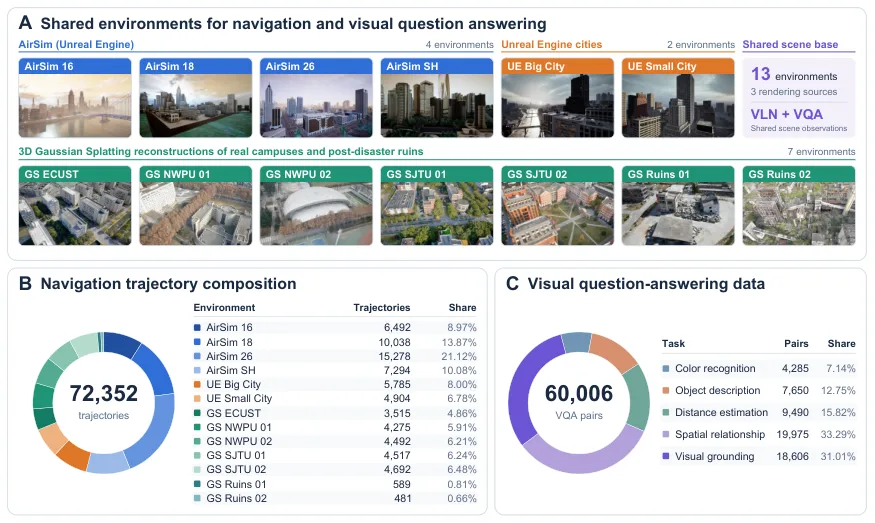
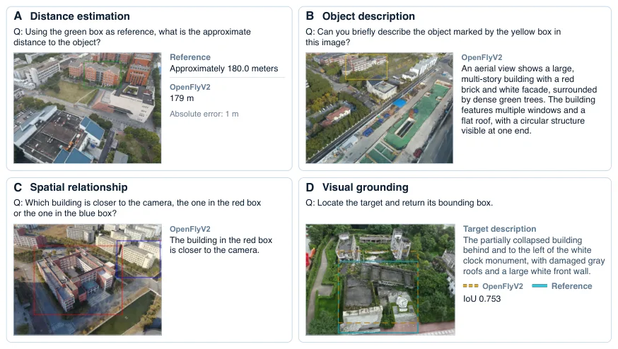
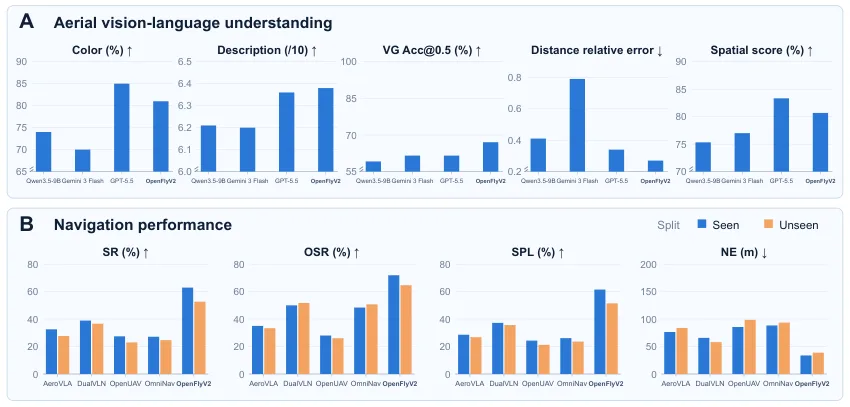
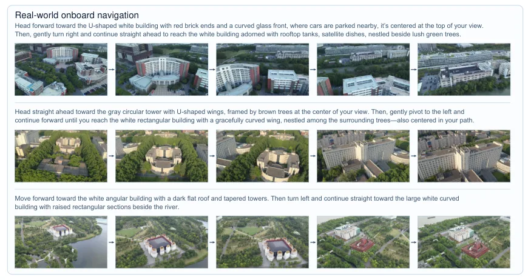

OpenFlyV2：机载视觉-语言-动作模型，把理解、空间推理与闭环飞行放进同一个 10 亿参数模型
OpenFlyV2: An onboard vision-language-action model for aerial perception and navigation
0.8B 主干 + 0.2B 动作专家，全部推理在 DJI M30T 上的 Jetson Orin NX 完成：10 Hz 输出 12 航点，仿真 seen/unseen 成功率 62.88%/52.67%（DualVLN 38.88%/36.67%），零样本真机 100 次试验成功率 48%，训练数据全部来自仿真与 3DGS 渲染（72,352 条轨迹 + 60,006 条 VQA），未用真机飞行数据。
sim success rate
real-world success rate
history token reduction
onboard action rate
作者、单位与技术谱系 · Research context
作者与单位
研究脉络
- OpenFly（Wang, Li, Wang, Zhao 等，ICLR 2026）团队前作关系：OpenFlyV2 是同一团队在航空 VLN 平台上的续作：前作提供平台与任务设定，本篇把“平台/数据”推进到“单模型机载闭环”，并复用同一批作者（Zhigang Wang、Bin Zhao、Xuelong Li）。[论文 §1 与参考文献（OpenFly, ICLR 2026）]
- Qwen3.5-VL（0.8B）方法基座关系：理解与语言 grounding 能力全部来自该预训练主干，动作专家在其多模态上下文之上接出；因此模型的语言/空间能力上限受该主干约束。[论文 §2.1]
- AeroVLA / DualVLN / OpenUAV / OmniNav方法上游（对照基线）关系：这些航空 VLN/VLA 方法保留各自设计与训练流程、只用本文导航数据做任务微调，作为仿真对比基线；它们都无法在 Orin NX 上运行，因此不参与机载比较。[论文 §2.4]
合作网络
- SAIL × 西北工业大学联合署名上海人工智能实验室 → 西北工业大学（Bin Zhao、Junli Liu）关系：共同署名（双单位）[论文首页署名与邮箱]
- OpenFly → OpenFlyV2 团队延续OpenFly（ICLR 2026） → OpenFlyV2关系：共同署名（团队前作）[论文参考文献中的 OpenFly 条目]
- 公开代码入口OpenFlyV2 论文 → github.com/Ideal-ljl/AeroBrain关系：官方代码（作者声明将公开）[论文摘要]
通讯作者依据论文首页邮箱块判断；团队前作关系依据参考文献署名重合，未推断导师/学生关系。
方法本质拆解 · What actually changed
是不是微调？
是在预训练 VLM 上做多任务后训练：0.8B Qwen3.5-VL 主干 + 0.2B 动作专家联合训练，监督来自自建的 72,352 条导航轨迹（航点）与 60,006 条 VQA 指令对。没有任何真机飞行数据参与策略训练，语言标注先自动生成再人工核验；论文提到监督阶段之后还有强化后训练，主对比与真机部署用的是最终策略。
有没有额外约束？
没有引入几何损失或物理约束项；动作以“12 个航点组成的短时域块”参数化，由底层飞控跟踪，这本身就是一种结构性约束。MAM 对历史长度设上界（有界事件 token），MSP 把采样起点约束在运动原型附近，两者都是“限制搜索空间”的间接约束。
推理/后端到底做了什么？
机上推理流水线：视觉编码 → MAM 更新事件记忆 → 主干前向 → 动作专家以 1 步 flow 去噪生成 12 航点 → 飞控跟踪，异步重叠“执行上一块”和“生成下一块”。没有外部建图、没有全局优化、没有测试时迭代；闭环完全靠策略自身与飞控稳定器。
方法本质是什么？
本质是“共享一个 VLM 表征，再用两个压缩器把历史长度与去噪步数这两个算力瓶颈各降一档”，使理解与控制在同一个 1B 模型里同时可行。它改变的是历史表示（事件化）与动作生成的初始化分布（运动原型），没有改变的是底层控制接口与训练目标。
输入（当前图像 + 语言指令 + 事件化飞行历史）→ 共享 VLM 主干编码 → 动作专家以运动原型为起点做 1 步 flow 去噪 → 输出 12 航点块交给飞控，10 Hz 全机载闭环。

桥接价值Bridge
桥接价值
它把“感知-语言-决策”压进一个能在无人机上跑的模型，而不是把 VLM 放在地面站：这正是资源受限平台上做闭环的工程范式。对我们的启发集中在两个接口——历史怎么压（MAM 把运动段与视觉锚点绑定），动作怎么在低预算下生成（MSP 用运动先验初始化采样）。这两点都能迁移到状态估计侧：关键帧/记忆组织可以按“运动段 + 锚点”切分，而不是固定时间窗。
方法与模块Method
方法摘要
架构是 0.8B Qwen3.5-VL 主干 + 0.2B 动作专家；主干处理当前观测、语言与历史，既可输出文本（理解/grounding/空间推理），也可条件化航点生成。MAM 把历史压成有界的事件 token（运动段 + 对应视觉锚点），把输入从 446 token 降到最多 218；MSP 在 flow matching 的源分布上围绕一个“被选中的运动原型”做条件化初始化，使 1 步去噪即可用；输出 12 航点/块，异步执行上一块与生成本块。
可迁移模块
第一，MAM 的事件式历史表示：以运动段为单位绑定视觉锚点，天然对应“关键帧 + 相对运动”的结构，可直接替换我们滑窗里的等间隔采样。第二，MSP 的“先验初始化采样”：把重复出现的运动模式当作采样起点，这与我们在因子图里用运动先验做初值是同一思路，只是发生在生成侧。第三，评测口径：作者同时报 1-step 与 2-step，暴露出“结构先验只在低预算下有用”，这种按计算预算分层的报告方式值得照搬。

证据Evidence
关键证据与数字
仿真（800 seen / 300 unseen episode）：SR 62.88% / 52.67%，DualVLN 为 38.88% / 36.67%（+24.00 / +16.00 个百分点）；NE 33.72 m / 38.81 m，对应 DualVLN 65.75 m / 57.98 m。真机 100 次试验（50 单地标 + 50 双地标，四个环境）聚合成功率 48%，全部推理在 Orin NX 上完成。理解侧：grounding Acc@0.5 67.1% vs GPT-5.5 61.6%，距离估计 MAE 47.32 m vs 52.62 m（相对误差 0.27 vs 0.34），描述质量 6.38 vs 6.36/10。效率与消融：MAM 把输入 token 从 446 降到 ≤218（−51.1%），动作专家去噪 80 ms → 20 ms；1 步预算下 Base SR 49.82% → MAM 53.45% → MAM+MSP 57.09%，NE 49.18 → 37.54 → 33.55 m。
边界与下一步Limits & Next Step
边界与风险
MSP 的收益有明确条件：两步预算时 MAM 单独 59.45% 反而高于 MAM+MSP 的 57.73%，说明它补偿的是“不能多步去噪”，不是普遍提升。真机 48% 是跨环境、跨指令类型的聚合值，论文未给分环境拆解，也没有失败类型统计，无法判断瓶颈在视觉 grounding 还是停点判定。所有训练样本都来自 AirSim/UE/3DGS 渲染，且四个真机环境里有两个在训练环境集合内，零样本的说法应按“未见真实飞行数据”而非“完全未见场景”理解。四个 VLA 基线都无法在 Orin NX 上运行，因此机载对比缺少同算力对手；48% 的绝对水平也说明离实用还有距离。
下一步实验
先做记忆表示的 A/B：在同一 token 预算下，把 MAM 的事件式历史与我们的固定窗口/关键帧策略对比 ATE 与成功率，看“运动段 + 锚点”是否真的比等间隔采样更省。再做延迟-成功率曲线：在 Orin 级设备上扫 1/2/4 步去噪，验证“结构先验只在低预算有效”这一结论是否也出现在我们的策略侧。最后复现它的两个空间指标（grounding Acc@0.5 与距离 MAE），确认共享表征带来的空间能力不是评测集偏置。





